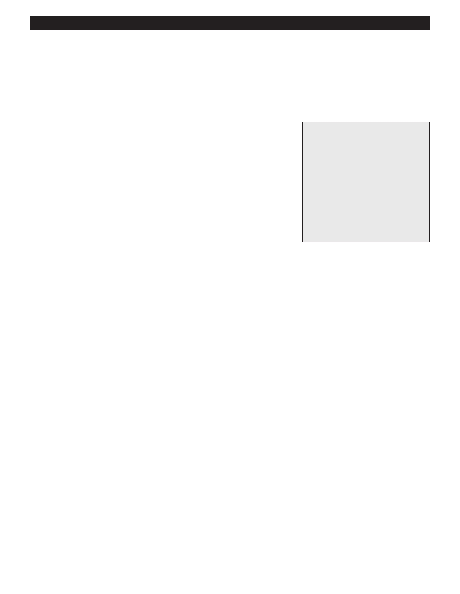

PA RT I C I PA N T R E S O U R C E G U I D E
Replacing a Ballast
A ballast is a special transformer that regulates the flow of current to the sockets of the
fluorescent fixture. You may need to replace the ballast if the fixture hums or flickers—and
if the ballast itself is reasonably priced.
Safety
Tools and Materials Needed
Make sure the power is off before you replace the ballast.
Replacement ballast
Use lockout/tagout procedures.
Use lockout/tagout device
Fiberglass ladder (if needed)
Wear eye protection and rubber-soled shoes. Remove jewelry.
Circuit tester or multimeter
Be careful using a ladder.
Insulated screwdriver
Support the parts of the fixture as you remove them. Don’t let any parts on
Ratchet wrench
fall on you.
Insulated combination tool
(see below)
Wire connectors (see below)
Notes:
68